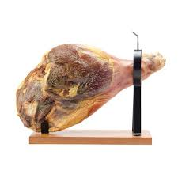

Enchidos D.Zeza
Somos uma empresa familiar dedicada à produção artesanal de enchidos e cortes de carne fresca de alta qualidade fundada em Freches.
Sobre a história da empresa:
A história da empresa D.Zeza remonta ao ano de 2005, quando nosso fundador, Carlos Pascoal., um apaixonado por gastronomia e tradições familiares, decidiu seguir seu sonho de compartilhar os sabores autênticos da região de Trancoso/Freches com sua comunidade.
Inspirado pelas receitas transmitidas por gerações em sua família, Carlos começou sua jornada em uma pequena loja, onde produzia e vendia seus próprios enchidos artesanais. Com o tempo, sua dedicação à qualidade e ao sabor autêntico atraiu uma base de clientes fiéis, consolidando a reputação de Enchidos D.Zeza como um destino confiável para os amantes da boa carne.
"Com a Enchidos D.Zeza, cada pedaço conta uma história de tradição, qualidade e paixão pela carne porque nosso compromisso é servir o melhor, de nossa família para a sua."
Carlos Pascoal
Curiosidades:
- Os enchidos têm uma longa história que remonta a milhares de anos. Civilizações antigas, como os romanos e os gregos, já preparavam e consumiam diferentes tipos de enchidos.
- A produção de enchidos muitas vezes envolve técnicas artesanais que são passadas de geração em geração. Isso inclui a seleção cuidadosa de carnes, o uso de temperos tradicionais e métodos de cura específicos.
- Os enchidos e os talhos desempenham um papel importante na cultura e na tradição alimentar de muitas comunidades ao redor do mundo, muitas vezes sendo associados a festividades e celebrações especiais.
"No fumeiro o aroma paira
Segredos dos enchidos, herança rara
Tradição que não se finda
Na aldeia, sabor que se define
Carne e tempero, mistério e saber
Enchidos feitos para se envaidecer
De geração em geração, o legado persiste
Na arte do sabor que jamais desiste"
Sabor da Tradição: O Hino dos Enchidos
| Chouriça | Morcela | Farinheira | Presunto |
|---|---|---|---|
 |
 |
Mais informações
Pode conhecer mais sobre a empresa Click aqui